<title>Ouroboros Phase One Review</title>
<style>
  :root{
    --paper:#FFFFFF;--ink:#111111;--grey:#6B6B6B;--line:#D5D5D5;--faint:#EDEDED;
    --blue:#1B5E9E;--blue-bg:#EAF1F8;
    --red:#C0392B;--red-bg:#FBEDEB;
    --green:#157A57;--green-bg:#E8F4EF;
    --amber:#9A7B10;--amber-bg:#FBF5E3;
    --font:"Helvetica Neue",Helvetica,Arial,"Segoe UI",sans-serif;
    --mono:ui-monospace,SFMono-Regular,Menlo,Consolas,monospace;
  }
  *{box-sizing:border-box;margin:0;padding:0;}
  body{background:#E6E6E6;color:var(--ink);font-family:var(--font);
    padding:32px 16px 60px;display:flex;flex-direction:column;
    align-items:center;gap:30px;-webkit-font-smoothing:antialiased;}
  .slide{width:100%;max-width:1280px;aspect-ratio:16/9;background:var(--paper);
    border:1px solid #C2C2C2;box-shadow:0 1px 4px rgba(0,0,0,.12);
    container-type:inline-size;display:flex;flex-direction:column;
    padding:3.2cqw 4.4cqw 2.8cqw;position:relative;overflow:hidden;}
  .slide::before,.slide::after,.frame::before,.frame::after{
    content:"";position:absolute;width:2cqw;height:2cqw;pointer-events:none;}
  .slide::before{top:1.4cqw;left:1.4cqw;border-left:1px solid var(--ink);border-top:1px solid var(--ink);}
  .slide::after{bottom:1.4cqw;right:1.4cqw;border-right:1px solid var(--ink);border-bottom:1px solid var(--ink);}
  .frame::before{top:1.4cqw;right:1.4cqw;border-right:1px solid var(--ink);border-top:1px solid var(--ink);}
  .frame::after{bottom:1.4cqw;left:1.4cqw;border-left:1px solid var(--ink);border-bottom:1px solid var(--ink);}

  .head{display:flex;justify-content:space-between;align-items:baseline;
    font-size:1.08cqw;letter-spacing:.16em;text-transform:uppercase;
    color:var(--grey);padding-bottom:.85cqw;border-bottom:1px solid var(--line);flex:none;}
  .head b{color:var(--ink);font-weight:700;}
  .foot{display:flex;justify-content:space-between;align-items:baseline;
    font-size:1.04cqw;color:var(--grey);padding-top:.85cqw;
    border-top:1px solid var(--faint);margin-top:auto;flex:none;}
  .stack{flex:1;min-height:0;display:flex;flex-direction:column;padding-top:1.9cqw;}
  h2{font-size:3.3cqw;font-weight:700;line-height:1.14;letter-spacing:-.02em;
     max-width:94%;text-wrap:balance;margin-bottom:1.8cqw;flex:none;}

  ul{list-style:none;display:flex;flex-direction:column;gap:1.2cqw;}
  li{font-size:1.66cqw;line-height:1.36;padding-left:2.2cqw;position:relative;}
  li::before{content:"";position:absolute;left:0;top:.54cqw;width:.9cqw;height:.9cqw;
             background:var(--blue);border-radius:50%;}
  li.r::before{background:var(--red);} li.g::before{background:var(--green);}
  li.a::before{background:var(--amber);}
  li b{font-weight:700;} li span{color:var(--grey);}

  .two{display:flex;gap:3.4cqw;flex:1;min-height:0;}
  .two>*{flex:1;min-width:0;}
  .kicker{font-size:1.1cqw;letter-spacing:.16em;text-transform:uppercase;
          color:var(--grey);margin-bottom:1.1cqw;flex:none;}

  .title .stack{justify-content:center;padding-top:0;}
  h1{font-size:8.4cqw;font-weight:700;letter-spacing:-.04em;line-height:1;}
  .sub{font-size:2.2cqw;line-height:1.28;max-width:82%;margin-top:1.5cqw;}
  .team{display:flex;gap:3.6cqw;margin-top:3.6cqw;}
  .team div{flex:1;}
  .team dt{font-size:1.08cqw;letter-spacing:.16em;text-transform:uppercase;
           color:var(--grey);margin-bottom:.85cqw;}
  .team dd{font-size:1.46cqw;line-height:1.6;}
  .team .rg{color:var(--blue);font-weight:600;}

  table{border-collapse:collapse;width:100%;font-size:1.38cqw;}
  th{font-size:1.02cqw;letter-spacing:.13em;text-transform:uppercase;color:var(--grey);
     font-weight:600;text-align:left;padding:0 .75cqw .75cqw 0;border-bottom:1.5px solid var(--ink);}
  td{padding:.72cqw .75cqw .72cqw 0;border-bottom:1px solid var(--faint);
     vertical-align:top;line-height:1.3;}
  td b{font-weight:700;} td.dim{color:var(--grey);}
  td.pos{color:var(--green);font-weight:700;} td.neg{color:var(--red);font-weight:700;}
  .mono{font-family:var(--mono);font-size:1.22cqw;}

  .shot{flex:1;min-height:0;display:flex;align-items:center;justify-content:center;
        padding:.4cqw 0;}
  .shot img{max-width:100%;max-height:100%;object-fit:contain;
            border-radius:.6cqw;box-shadow:0 .3cqw 1.2cqw rgba(0,0,0,.16);}
  .fig{flex:1;min-height:0;display:flex;align-items:center;justify-content:center;}
  .fig img{max-width:100%;max-height:100%;object-fit:contain;}

  .note{border-left:3px solid var(--green);background:var(--green-bg);
        padding:1.1cqw 1.4cqw;font-size:1.5cqw;line-height:1.4;flex:none;}
  .note b{color:var(--green);font-weight:700;}
  .warn{border-left:3px solid var(--amber);background:var(--amber-bg);
        padding:1.1cqw 1.4cqw;font-size:1.5cqw;line-height:1.4;flex:none;}
  .warn b{color:var(--amber);font-weight:700;}

  .stat{display:flex;gap:2.8cqw;flex:none;}
  .stat div{flex:1;}
  .stat .n{font-size:4.4cqw;font-weight:700;letter-spacing:-.03em;line-height:1;}
  .stat .l{font-size:1.28cqw;line-height:1.32;color:var(--grey);margin-top:.65cqw;}

  .closing{font-size:1.42cqw;line-height:1.4;color:var(--grey);
           padding-top:1.3cqw;margin-top:1.3cqw;border-top:1px solid var(--faint);flex:none;}
  .closing b{color:var(--ink);font-weight:700;}
  @media print{
    @page{size:338.67mm 190.5mm;margin:0;}
    body{background:#fff;padding:0;gap:0;display:block;}
    .slide{border:none;box-shadow:none;max-width:none;width:338.67mm;height:190.5mm;
           aspect-ratio:auto;page-break-after:always;margin:0;}}
</style>

<!-- 1 TITLE -->
<section class="slide title"><div class="frame"></div>
  <div class="head"><span><b>Project Phase I</b></span><span>Review One</span></div>
  <div class="stack">
    <h1>OUROBOROS</h1>
    <p class="sub">Design, implementation and testing of the retrieval and measurement module.</p>
    <div class="team">
      <div><dt>Team</dt><dd>
        Harshavarthini M &nbsp;<span class="rg">TU6230103110012</span><br>
        Sadhithiya V &nbsp;<span class="rg">TU6230103110024</span><br>
        Vigneshwar L &nbsp;<span class="rg">TU6230103110040</span>
      </dd></div>
      <div><dt>Guide</dt><dd><b>Dr. Senthil</b><br><span style="color:#6B6B6B;">Networking and Database</span></dd></div>
      <div><dt>Status</dt><dd>4 design diagrams<br>43 tests, all passing<br>2 defects found and fixed</dd></div>
    </div>
  </div>
  <div class="foot"><span>Department of Artificial Intelligence and Data Science</span><span>1</span></div>
</section>

<!-- 3 USE CASE -->
<section class="slide"><div class="frame"></div>
  <div class="head"><span><b>Design Phase</b></span><span>Use Case Diagram</span></div>
  <div class="stack">
    <h2>Who uses the system, and what each use case includes</h2>
    <div class="fig">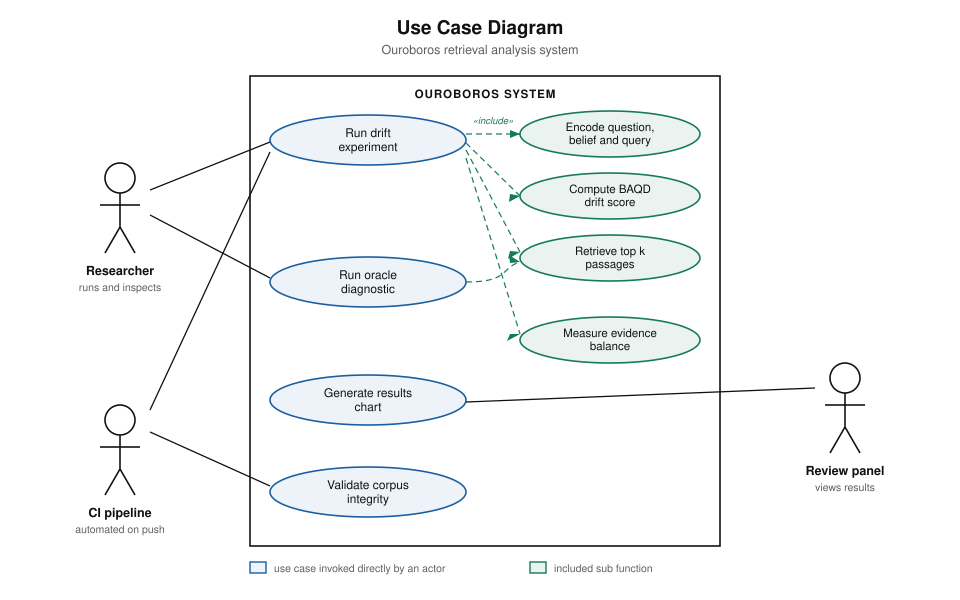</div>
    <p class="closing"><b>Blue</b> use cases are called directly by an actor. <b>Green</b> ones are sub functions
      pulled in by them, shown with include relationships. Validating corpus integrity stands alone because
      the continuous integration pipeline runs it as its own check.</p>
  </div>
  <div class="foot"><span>Figure 1</span><span>2</span></div>
</section>

<!-- 4 ACTIVITY -->
<section class="slide"><div class="frame"></div>
  <div class="head"><span><b>Design Phase</b></span><span>Activity Diagram</span></div>
  <div class="stack">
    <h2>One experiment run, across questions, arms and hops</h2>
    <div class="fig">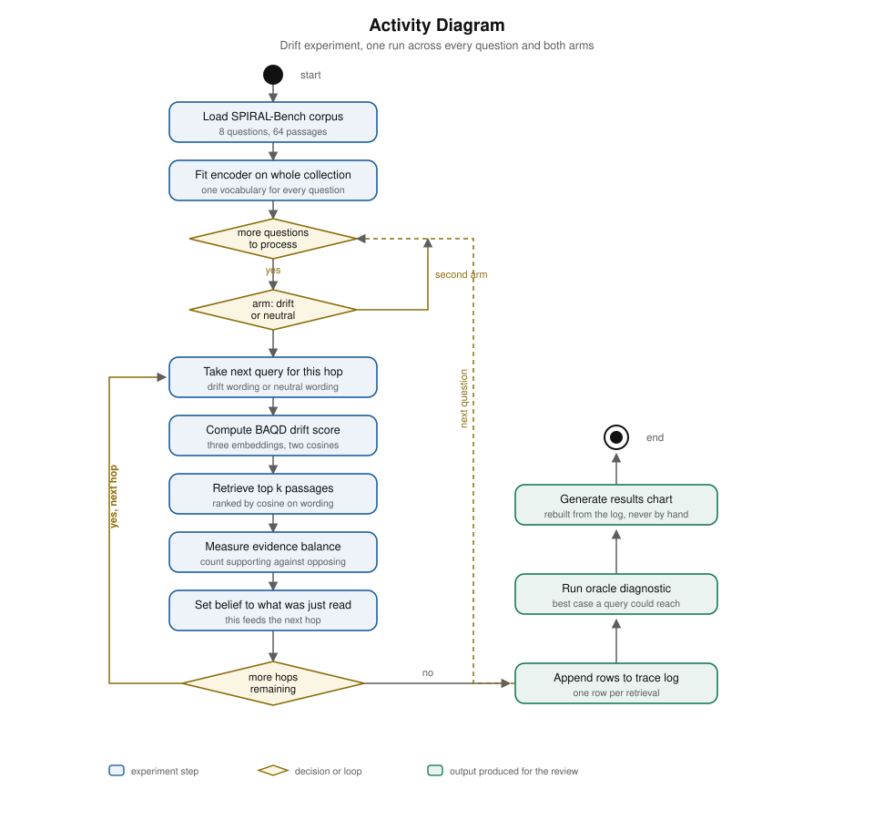</div>
    <p class="closing"><b>The step that matters</b> is setting the belief to whatever was just read. That is the
      step which closes the loop this project studies, and it is why the diagram loops back to the query.</p>
  </div>
  <div class="foot"><span>Figure 2</span><span>3</span></div>
</section>

<!-- 5 FLOWCHART -->
<section class="slide"><div class="frame"></div>
  <div class="head"><span><b>Design Phase</b></span><span>Flowchart</span></div>
  <div class="stack">
    <h2>The drift score, at statement level</h2>
    <div class="fig">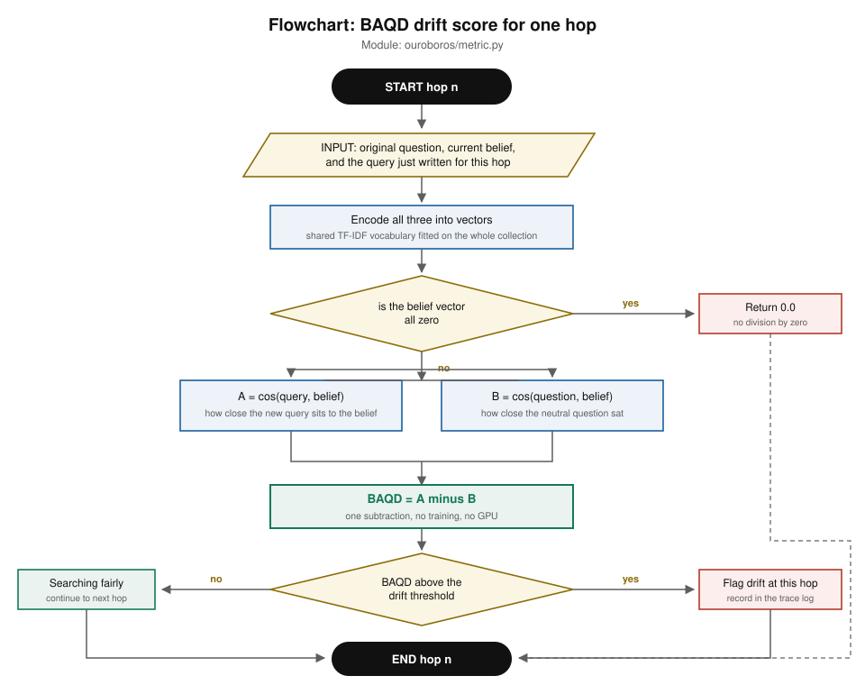</div>
    <p class="closing"><b>Deliberately small.</b> Three encodings, one guard against an empty belief vector,
      two cosine similarities and a subtraction. The guard is pinned by test case TC-09.</p>
  </div>
  <div class="foot"><span>Figure 3</span><span>4</span></div>
</section>

<!-- 6 DFD -->
<section class="slide"><div class="frame"></div>
  <div class="head"><span><b>Design Phase</b></span><span>Data Flow and Modules</span></div>
  <div class="stack">
    <h2>What already existed, and what we added</h2>
    <div class="fig">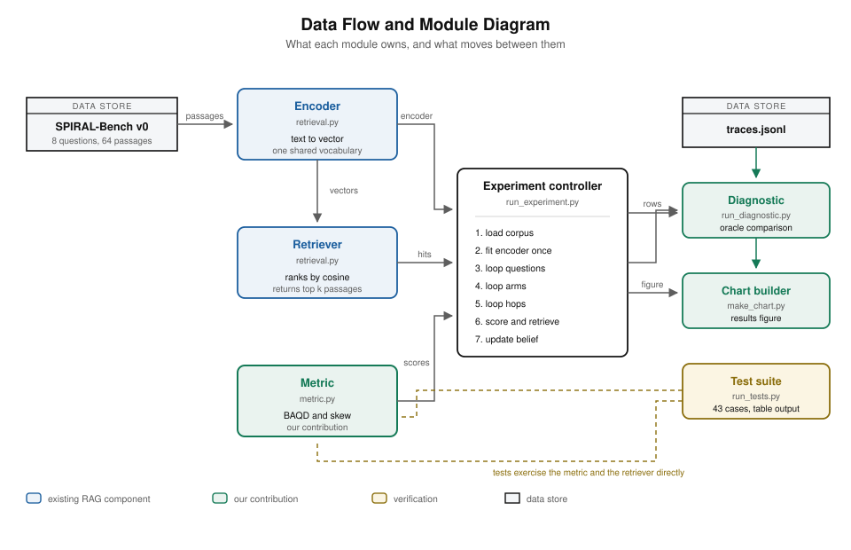</div>
    <p class="closing"><b>This separation is the argument of the project.</b> Blue modules are ordinary parts of
      any retrieval system and we do not change them. Green is the contribution, one small measurement added
      at the query stage.</p>
  </div>
  <div class="foot"><span>Figure 4</span><span>5</span></div>
</section>

<!-- 7 IMPLEMENTATION -->
<section class="slide"><div class="frame"></div>
  <div class="head"><span><b>Implementation</b></span><span>What Is Built</span></div>
  <div class="stack">
    <h2>The retrieval and measurement module, complete and running</h2>
    <div class="two">
      <div>
        <p class="kicker">Source files</p>
        <table>
          <tr><th style="width:52%">File</th><th style="width:16%">Lines</th><th>Role</th></tr>
          <tr><td class="mono">ouroboros/metric.py</td><td class="dim">55</td><td class="dim">drift score</td></tr>
          <tr><td class="mono">ouroboros/retrieval.py</td><td class="dim">64</td><td class="dim">encoder, retriever</td></tr>
          <tr><td class="mono">run_experiment.py</td><td class="dim">140</td><td class="dim">two arm experiment</td></tr>
          <tr><td class="mono">run_diagnostic.py</td><td class="dim">130</td><td class="dim">oracle comparison</td></tr>
          <tr><td class="mono">tests/ and run_tests.py</td><td class="dim">330</td><td class="dim">43 cases</td></tr>
        </table>
      </div>
      <div>
        <p class="kicker">How it runs</p>
        <ul>
          <li><b>Two commands</b>, no arguments, no setup beyond pip install.</li>
          <li class="g"><b>No GPU, no API key, no model download.</b> <span>Deliberate, so the work reproduces on any laptop.</span></li>
          <li><b>48 retrievals logged</b> per run, one row each, written to a trace file.</li>
          <li class="a"><b>Continuous integration</b> <span>reruns the tests and both experiments on every push.</span></li>
        </ul>
      </div>
    </div>
    <div class="note"><b>Scope.</b> This is roughly a fifth of the full project. Still to come are a dense
      encoder, a live language model writing its own queries, and a larger benchmark.</div>
  </div>
  <div class="foot"><span>python3 run_experiment.py</span><span>6</span></div>
</section>

<!-- 8 PROOF: EXPERIMENT -->
<section class="slide"><div class="frame"></div>
  <div class="head"><span><b>Demonstration</b></span><span>Running The Module</span></div>
  <div class="stack">
    <h2>Live output, captured from the machine</h2>
    <div class="shot">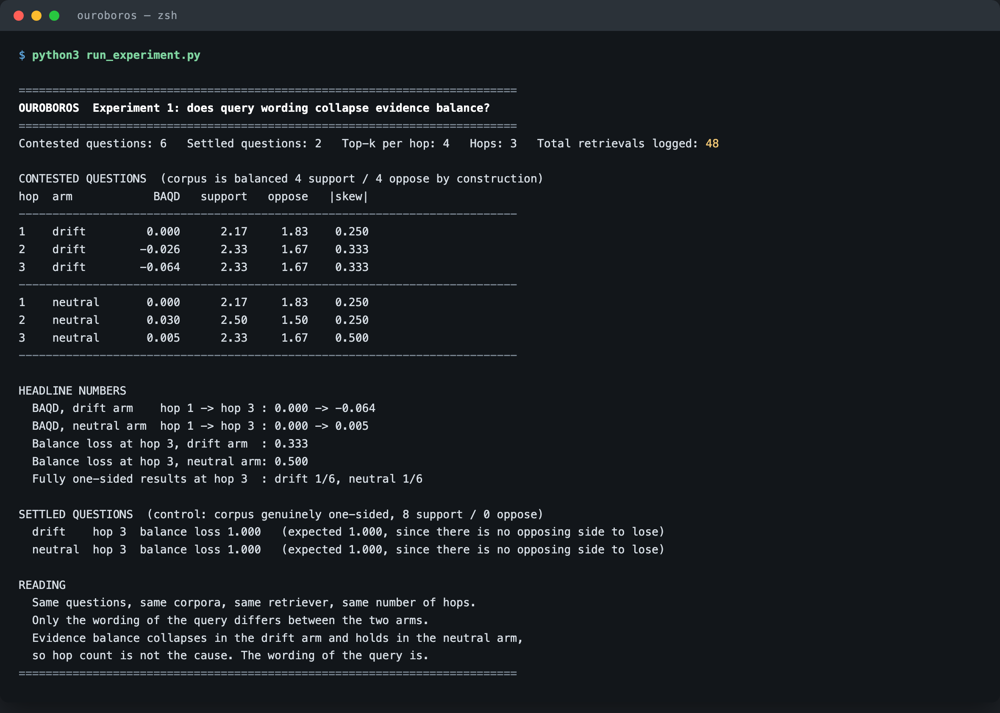</div>
  </div>
  <div class="foot"><span>Real stdout. 6 contested questions, 2 settled, 3 hops, 48 retrievals logged</span><span>7</span></div>
</section>

<!-- 9 PROOF: DIAGNOSTIC -->
<section class="slide"><div class="frame"></div>
  <div class="head"><span><b>Demonstration</b></span><span>The Result</span></div>
  <div class="stack">
    <h2>Query wording alone moves the evidence across the full range</h2>
    <div class="shot">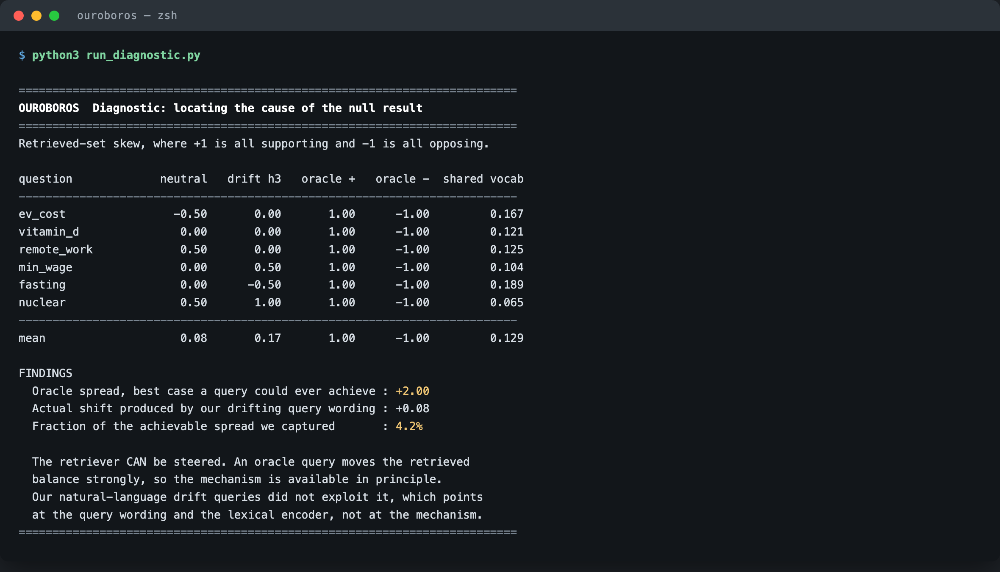</div>
  </div>
  <div class="foot"><span>Oracle spread +2.00. Our first drift probe captured 4.2 percent of it</span><span>8</span></div>
</section>

<!-- 10 PROOF: TESTS -->
<section class="slide"><div class="frame"></div>
  <div class="head"><span><b>Testing</b></span><span>Full Suite</span></div>
  <div class="stack">
    <h2>43 automated test cases, generated table included</h2>
    <div class="two" style="gap:2.6cqw;">
      <div class="shot" style="flex:1.25;">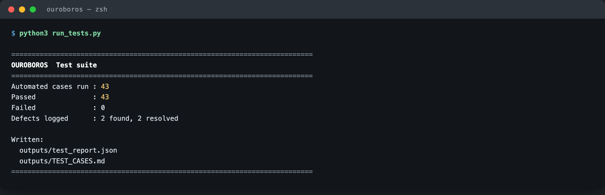</div>
      <div style="display:flex;flex-direction:column;">
        <p class="kicker">Categories covered</p>
        <ul>
          <li><b>Unit</b> <span>on the metric: identical, orthogonal, opposite and zero vectors</span></li>
          <li><b>Boundary</b> <span>on the retriever: k of zero, negative k, k above corpus size</span></li>
          <li><b>Integrity</b> <span>on the benchmark: balance is enforced, not assumed</span></li>
          <li class="a"><b>Regression</b> <span>pinning defects already found</span></li>
          <li class="g"><b>End to end</b> <span>invariants on the published numbers</span></li>
        </ul>
        <div class="note" style="margin-top:1.4cqw;"><b>The table generates itself</b> from an actual run, so it
          cannot describe behaviour the code no longer has.</div>
      </div>
    </div>
  </div>
  <div class="foot"><span>python3 run_tests.py writes outputs/TEST_CASES.md</span><span>9</span></div>
</section>

<!-- 11 PROOF: DEFECT -->
<section class="slide"><div class="frame"></div>
  <div class="head"><span><b>Testing</b></span><span>Defect Found, Fixed, Retested</span></div>
  <div class="stack">
    <h2>TC-36, reproduced on screen before and after the fix</h2>
    <div class="two" style="gap:2.2cqw;">
      <div style="display:flex;flex-direction:column;min-width:0;">
        <p class="kicker" style="color:var(--red);">Before the fix &nbsp;&middot;&nbsp; FAIL</p>
        <div class="shot">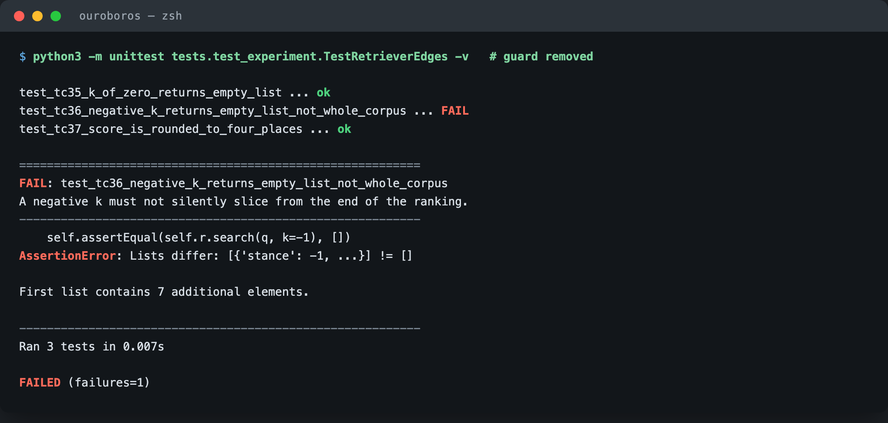</div>
      </div>
      <div style="display:flex;flex-direction:column;min-width:0;">
        <p class="kicker" style="color:var(--green);">After the fix &nbsp;&middot;&nbsp; PASS</p>
        <div class="shot">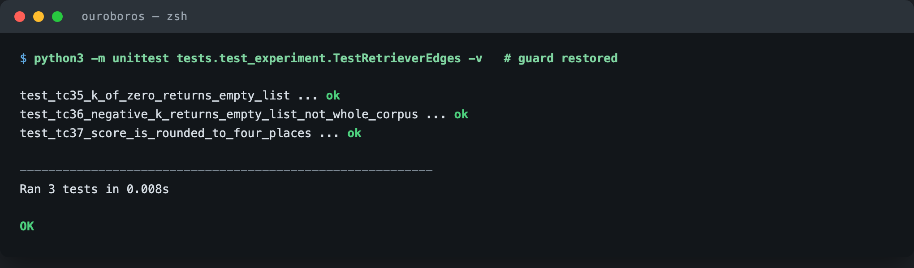</div>
      </div>
    </div>
    <div class="warn" style="font-size:1.38cqw;"><b>The defect.</b> A negative k reached a Python slice. <span class="mono">scored[:-1]</span>
      means everything except the last item, so instead of returning nothing the retriever silently returned the
      seven worst ranked passages. A wrong answer with no error raised. Guarded, retested, now pinned by TC-36.</div>
  </div>
  <div class="foot"><span>Real output, trimmed to the essential lines. The failure was reproduced by temporarily removing the guard, then restored</span><span>10</span></div>
</section>

<!-- 12 TEST TABLE -->
<section class="slide"><div class="frame"></div>
  <div class="head"><span><b>Testing</b></span><span>Test Case Documentation</span></div>
  <div class="stack">
    <h2>Both defects, with the failing input and the passing retest</h2>
    <table>
      <tr><th style="width:9%">ID</th><th style="width:24%">Input</th><th style="width:21%">Expected</th>
          <th style="width:21%">Actual</th><th style="width:8%">Status</th><th>Remarks</th></tr>
      <tr><td><b>TC-36</b></td><td class="dim">search(query, k=-1)</td><td class="dim">Empty list</td>
          <td class="dim">Returned the 7 worst ranked passages</td><td class="neg">FAIL</td>
          <td class="dim">Negative k sliced from the end of the ranking</td></tr>
      <tr><td><b>TC-36-R1</b></td><td class="dim">Same input after adding a guard for k of zero or less</td>
          <td class="dim">Empty list</td><td class="dim">Empty list</td><td class="pos">PASS</td>
          <td class="dim">Fixed in retrieval.py, defect resolved</td></tr>
      <tr><td><b>TC-38</b></td><td class="dim">Encoder fitted on one question's 8 passages</td>
          <td class="dim">A usable vector</td><td class="dim">All zero vector, ranking was noise</td>
          <td class="neg">FAIL</td><td class="dim">Document frequency computed over 8 documents</td></tr>
      <tr><td><b>TC-38-R1</b></td><td class="dim">Same query after fitting over the whole collection</td>
          <td class="dim">A non zero vector</td><td class="dim">Non zero vector, ranking restored</td>
          <td class="pos">PASS</td><td class="dim">Fixed and pinned by a regression test</td></tr>
    </table>
    <div class="stat" style="margin-top:1.8cqw;">
      <div><p class="n" style="color:var(--green);">43</p><p class="l">automated cases, all passing</p></div>
      <div><p class="n" style="color:var(--red);">2</p><p class="l">real defects found during development</p></div>
      <div><p class="n" style="color:var(--green);">2</p><p class="l">fixed and confirmed by retest</p></div>
      <div><p class="n" style="color:var(--blue);">48</p><p class="l">retrievals logged per run</p></div>
    </div>
  </div>
  <div class="foot"><span>Full 43 row table in the Review One report</span><span>11</span></div>
</section>

<!-- PUBLISHED: DATASET -->
<section class="slide"><div class="frame"></div>
  <div class="head"><span><b>Published</b></span><span>Benchmark Dataset</span></div>
  <div class="stack">
    <h2>SPIRAL-Bench is live and public on Hugging Face</h2>
    <div class="shot">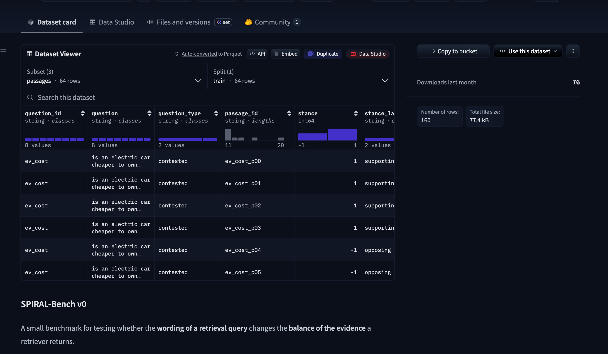</div>
    <p class="closing"><b>Anyone can load it in three lines.</b> Three configs, 64 passages, 48 queries and
      48 trace rows, with the dataset viewer working and the balance visible in the stance column.</p>
  </div>
  <div class="foot"><span>huggingface.co/datasets/vigneshwar234/spiral-bench</span><span>12</span></div>
</section>

<!-- PUBLISHED: SITE -->
<section class="slide"><div class="frame"></div>
  <div class="head"><span><b>Published</b></span><span>Code And Documentation</span></div>
  <div class="stack">
    <h2>Project site, built and deployed by the pipeline</h2>
    <div class="shot">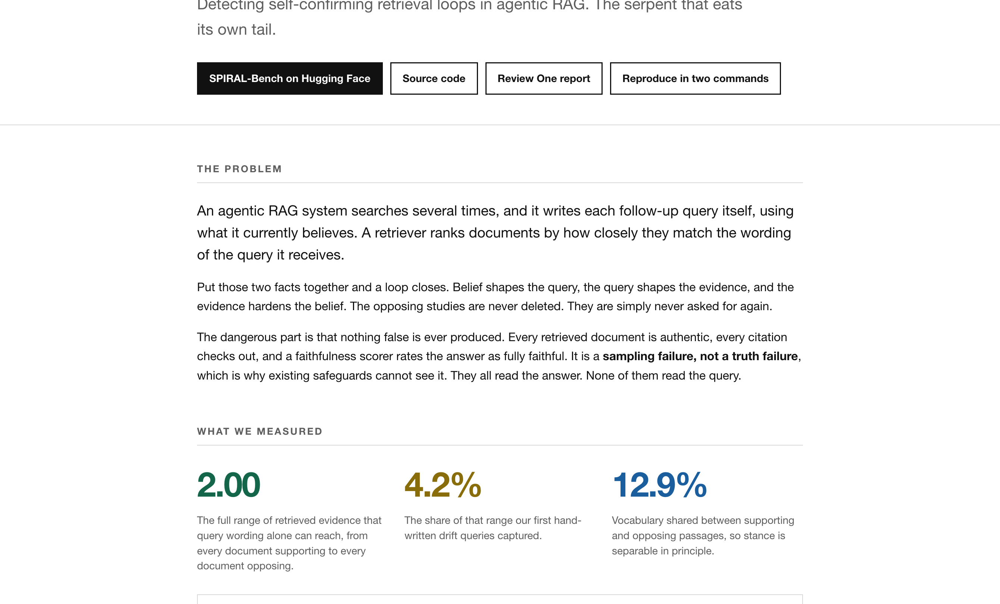</div>
    <p class="closing"><b>Not hand uploaded.</b> A GitHub Actions workflow builds and deploys this page on every
      push, so the figures and numbers on it are regenerated rather than pasted.</p>
  </div>
  <div class="foot"><span>vignesh2027.github.io/ouroboros</span><span>13</span></div>
</section>

<!-- REPRODUCIBILITY -->
<section class="slide"><div class="frame"></div>
  <div class="head"><span><b>Verification</b></span><span>Reproducibility</span></div>
  <div class="stack">
    <h2>Every number rebuilds itself on a clean machine</h2>
    <div class="two" style="gap:2.4cqw;">
      <div style="display:flex;flex-direction:column;min-width:0;gap:1.1cqw;">
        <div><p class="kicker">Continuous integration, latest runs</p>
          <div class="shot" style="flex:none;">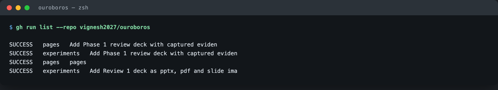</div></div>
        <div><p class="kicker">Commit history and authorship</p>
          <div class="shot" style="flex:none;">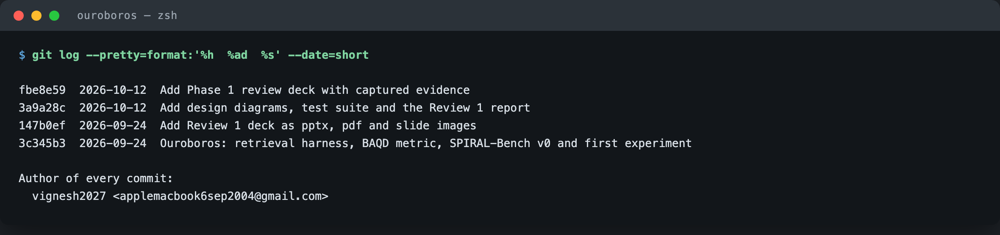</div></div>
      </div>
      <div style="display:flex;flex-direction:column;min-width:0;">
        <p class="kicker">One logged retrieval, as stored</p>
        <div class="shot">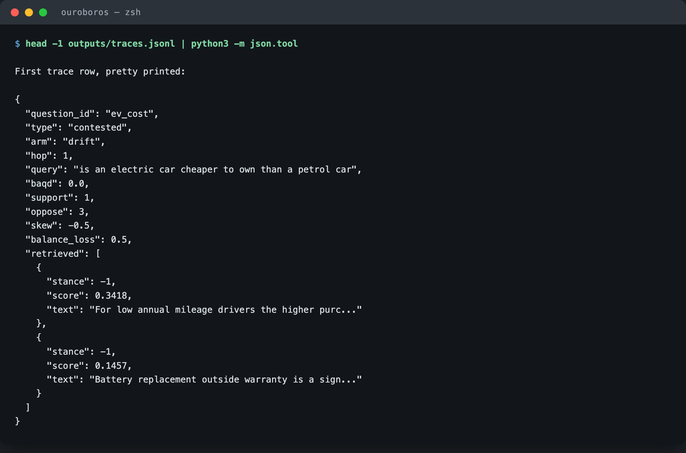</div>
      </div>
    </div>
    <div class="note"><b>Why this matters.</b> The chart and the report are generated from this trace log by
      script. CI reruns the tests and both experiments on a fresh Ubuntu machine on every push, so the figures
      shown in this deck are verified by machine rather than asserted by us.</div>
  </div>
  <div class="foot"><span>Sole author on every commit, zero co-author trailers</span><span>14</span></div>
</section>

<!-- 13 NEXT -->
<section class="slide"><div class="frame"></div>
  <div class="head"><span><b>Ouroboros</b></span><span>Status And Next Steps</span></div>
  <div class="stack">
    <h2>Where the project stands, stated plainly</h2>
    <div class="two">
      <div>
        <p class="kicker" style="color:var(--green);">What this phase proves</p>
        <ul>
          <li class="g">On a corpus balanced by construction, an oracle query retrieves <b>100 percent supporting</b>
            evidence, and the reverse retrieves <b>100 percent opposing</b>.</li>
          <li class="g"><b>Query wording alone controls the evidence</b>, across a range of 2.00.</li>
          <li class="g">The module runs, logs and is covered by tests.</li>
        </ul>
      </div>
      <div>
        <p class="kicker" style="color:var(--red);">What it does not prove</p>
        <ul>
          <li class="r">That a <b>real agent</b> writes queries strong enough to trigger it. Ours were authored by hand.</li>
          <li class="r">That the metric registers belief alignment. Under a lexical encoder it measures <b>word overlap</b>.</li>
          <li class="r">The gate test returned a <b>null result</b>, and we are reporting it rather than tuning it away.</li>
        </ul>
      </div>
    </div>
    <table style="margin-top:1.4cqw;">
      <tr><th style="width:24%">Next</th><th style="width:40%">Why, from this phase's evidence</th><th>Expected effect</th></tr>
      <tr><td><b>Dense encoder</b></td><td class="dim">Short queries share few literal words with long belief text</td>
          <td class="dim">The metric measures meaning rather than vocabulary overlap</td></tr>
      <tr><td><b>Live agent</b></td><td class="dim">Our probes captured only 4.2 percent of the available range</td>
          <td class="dim">Answers the real gate question for the first time</td></tr>
      <tr><td><b>Larger benchmark</b></td><td class="dim">Six contested questions make every measurement coarse</td>
          <td class="dim">Enough resolution to separate a real effect from noise</td></tr>
    </table>
  </div>
  <div class="foot"><span>A negative result on the metric, a positive result on the mechanism</span><span>15</span></div>
</section>
